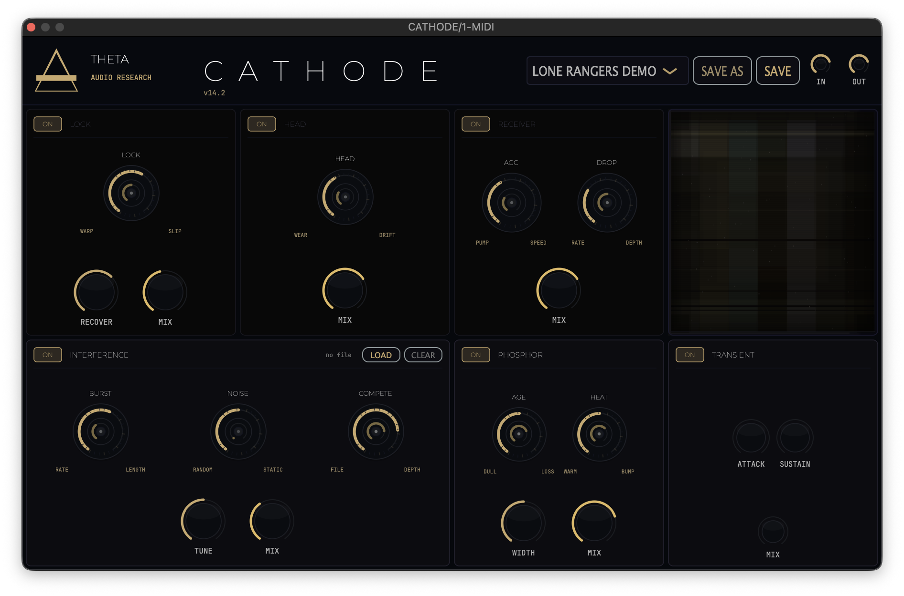

CATHODE
Cathode Ray Tube & Tape Harmoonic Saturation / Degredation Tool
"Digital is cold. The light of the Cathode Ray is warm. This plugin would send Max Renn into Oblivion."

LAB NOTE #003 // THERMAL_DYNAMICS
The saturation curve now mimics 1940s vacuum tube architecture. Bias settings remain unstable by design to ensure the harmonic profile breathes with the input signal.